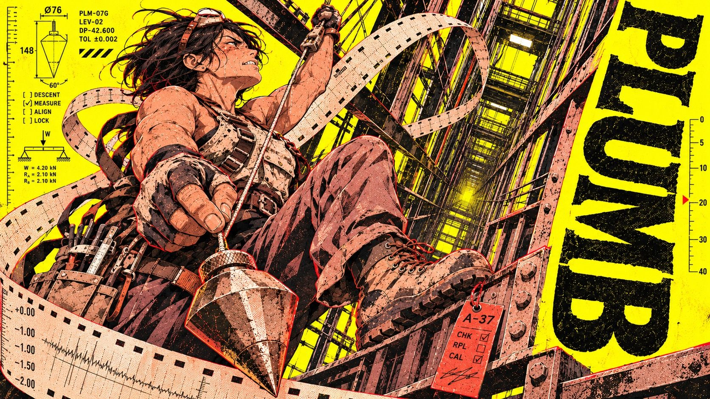
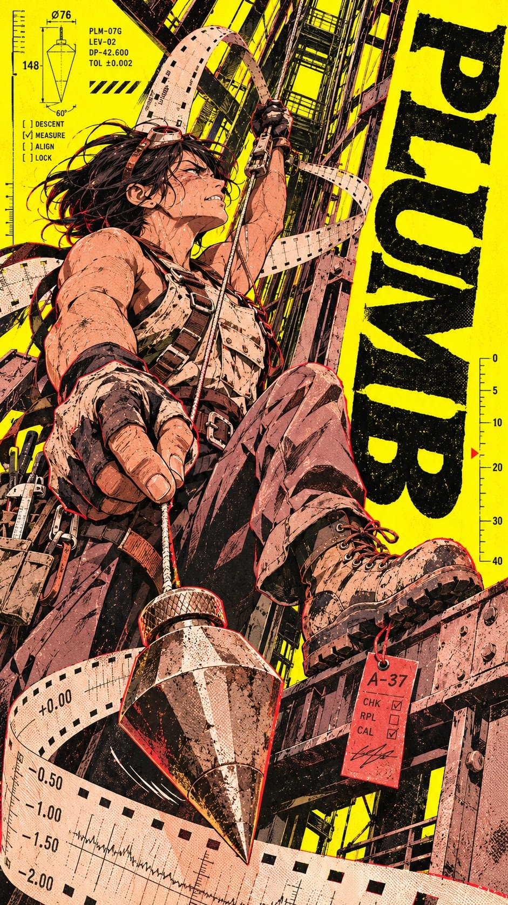
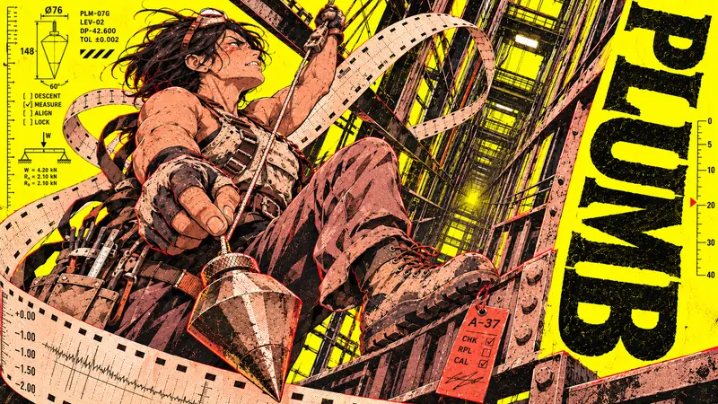
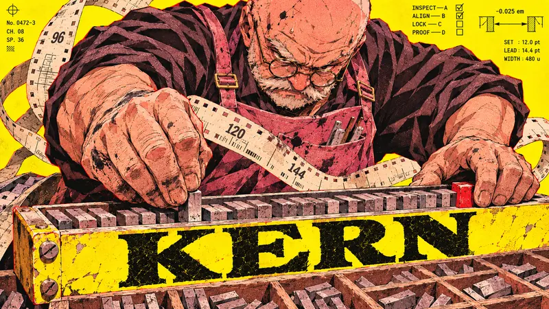
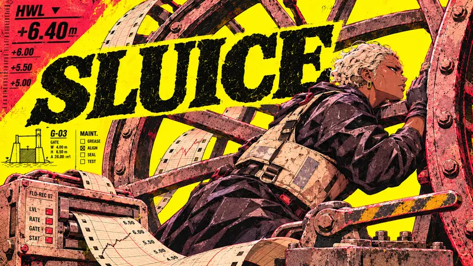
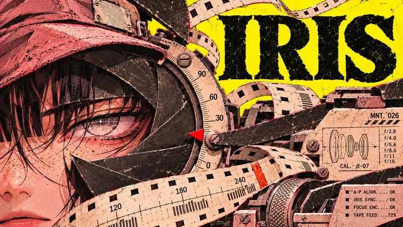

Type Posters · AI image style prompt
Sulphur Shift
Sulphur-yellow shift-worker character posters: anime operators, oversized tools and perforated recorder strips colliding with a heavy black slab-serif word in rough riso-like print.


4 example cases
Same style.json, different subjects. Each case's values are in the examples section of the JSON.




What this style does
A shift-worker character zine on sulphur paper: workers, oversized tools and perforated recorder strips spat from machines compress each moment of operation into a rough-printed character poster.
Signature traits
- Draw an original adult anime worker as the emotional focal point, with fine tapered ink lines, sharp cel-shadow facets and detailed foreground machinery.
- Use luminous sulphur-yellow stock, carbon-black headline and shadows, dusty rose and bone for figures and hardware, with tiny vermilion register slips under hard neutral light.
- Set a massive upright, low-contrast weighty slab or flared-serif word with squat counters, bitten ink edges and readable letters.
- Drive a broad folded perforated recorder strip through multiple planes, with rectangular feed holes, speed ticks, cut edges and one overprinted bend.
- Collide cropped tool, worker, strip and type; crowd a local margin with dense texture text and diagram numerals; leave one yellow pocket quiet.
- Keep dry black ink loss, fine halftone in midtones and narrow red plate offset local to edges; avoid photographic softness.
style.json
{
"schema_version": "2.2",
"style_version": "1.0",
"style_name": "Sulphur Shift",
"style_slug": "sulphur-shift",
"style_summary": "A shift-worker character zine on sulphur paper: workers, oversized tools and perforated recorder strips spat from machines compress each moment of operation into a rough-printed character poster.",
"environment_variables": {
"ASPECT_RATIO": "9:16 or 16:9",
"STYLE_FIDELITY_ANCHORS": "Prioritized visual rules",
"SOURCE_CONTENT_TO_AVOID": "Source-specific excluded identities",
"WORKER": "Original character and wardrobe",
"ACTION": "Physical event and foreground mechanism",
"LAYOUT": "Angle, title and accent placement in both ratios",
"MAIN_TEXT": "Single exact title"
},
"style_fidelity_anchors": [
"[CORE] Draw an original adult anime worker as the emotional focal point, with fine tapered ink lines, sharp cel-shadow facets and detailed foreground machinery.",
"[CORE] Use luminous sulphur-yellow stock, carbon-black headline and shadows, dusty rose and bone for figures and hardware, with tiny vermilion register slips under hard neutral light.",
"[CORE] Set a massive upright, low-contrast weighty slab or flared-serif word with squat counters, bitten ink edges and readable letters.",
"[CORE] Drive a broad folded perforated recorder strip through multiple planes, with rectangular feed holes, speed ticks, cut edges and one overprinted bend.",
"[CORE] Collide cropped tool, worker, strip and type; crowd a local margin with dense texture text and diagram numerals; leave one yellow pocket quiet.",
"[CORE] Keep dry black ink loss, fine halftone in midtones and narrow red plate offset local to edges; avoid photographic softness.",
"[FLEX] Move and rotate title, witness mark and figure to expose the physical direction of each job.",
"[FLEX] Scale the foreground part from tool-sized to architectural if the operator stays recognisable."
],
"source_content_to_avoid": [
"The blonde figure, school jacket, skirt and collar hardware.",
"The thorn halo and black branching ribbons.",
"The branded music console, knobs and keyboard case.",
"The source title, dates, anniversary badges, logos, credit and exact masthead layout."
],
"visual_deconstruction": {
"grammar": "角色志式封面：荧黄纸、厚重衬线字、细线肖像与近大远小的机械碰撞，小字和数字形成另一层尺度。",
"signature": "把包围金发角色的分叉荆棘换成有物理来向的折叠记录纸。纸带用等距方孔透出底色，在机器、标题和人体之间来回穿插。",
"energy": {
"density": "约四分之三以上画面有字、人物、结构或图形。荧黄仍保留连通的静区。",
"layering": "纸地、标题、记录带、人物、夸张近景器件至少四层交叠。",
"disorder": "干墨脱落、局部朱红错版、细网点；保留五官清晰。",
"tension": "人的视线与器械受力方向相撞；至少一处硬裁切和一处尺度跳变。"
},
"series_constants": "荧黄底、碳黑标题、藕粉与骨白器件、少量朱红；中性硬光；系列构件为穿孔纸、测量标尺、密集记录栏。"
},
"composition": {
"rule": "Construct a machine-specific direction of force; let the type and the recorder strip cut across it. Flat fields, lettering and print modules together occupy at least a quarter of the image.",
"ratios": "Portrait stacks depth along the mechanism; landscape redistributes it horizontally, preserving face, title and pressure at the edges."
},
"typography": {
"primary": "Very heavy upright slabby / flared serif; black ink on yellow, with wear much smaller than the counters.",
"texture": "Tiny condensed records, diagram numerals and margin annotations act as tone."
},
"color_palette": {
"stock": "#F6EC00",
"ink": "#171613",
"midtones": "#CA9795",
"light": "#F5E3D0",
"offset": "#E32920"
},
"image_treatment": {
"finish": "Flat neutral highlights and angular cel shadows. Tapered contour lines around facial features against coarser broken edges on machinery. Fine screen dots in dusty rose, modest dry flecks in type, red plate lips on a few silhouettes."
},
"design_rules": [
"Let paper feed through a real machine or measuring device.",
"Let a cropped foreground component establish scale.",
"Keep the black title visually recoverable amid overlap.",
"Gather microcopy into local editorial masses."
],
"do": [
"Keep a connected yellow field.",
"Give the operator a job-specific expression and physical point of contact.",
"Make every accent point to the event."
],
"avoid": [
"Copying the original character or masthead anatomy.",
"Replacing mechanical strain with a static fashion pose.",
"Spreading grit over every highlight."
],
"prompt_template": "Design one full-bleed {ASPECT_RATIO} illustrated character poster. {STYLE_FIDELITY_ANCHORS} Worker: {WORKER}. Action: {ACTION}. Compose for this canvas: {LAYOUT}. Print the primary word exactly once: {MAIN_TEXT}. Keep its letters individually legible. Other tiny recorder codes, scale numbers and maintenance annotations are texture. Exclude {SOURCE_CONTENT_TO_AVOID} No mockup border, glossy 3D or soft photographic backdrop.",
"negative_prompt": "Generic fashion pose, thorn halo, rectangular synth console, calendar badges, soft bloom, photoreal metal, tidy isolated caption, hairline-only layout, ornamental dust everywhere.",
"examples": [
{
"case_name": "plumb",
"values": {
"WORKER": "A wiry middle-aged woman with short black windswept hair, sleeveless bone canvas rig and scuffed climbing boots",
"ACTION": "She hangs tilted in a lift shaft harness, pinching the taut line of a faceted plumb bob swinging close to the viewer; face in strained profile",
"LAYOUT": "Keep the figure to the left of the true vertical. Rotate the whole word along the right edge as one readable rail, never stack sideways letters individually. Tall: long falling line; wide: yard-long tilted depth traverse. Red witness tag near her boot.",
"MAIN_TEXT": "PLUMB"
}
},
{
"case_name": "kern",
"values": {
"WORKER": "Heavyset older male letterpress operator, shaved head, ink-stained rose apron, dark rolled sleeves and round spectacles",
"ACTION": "From steep overhead he beds a huge metal sort into a diagonal composing stick; his raised brow and foreshortened forearm show the effort",
"LAYOUT": "Head and shoulders central, type low on yellow along the stick, red spacer on its trailing end. Tall: types and forearm tumble downward. Wide: spread the opened type case across the near corners.",
"MAIN_TEXT": "KERN"
}
},
{
"case_name": "sluice",
"values": {
"WORKER": "Adult brown-skinned lock keeper with pale cropped curls, tar-black oilskin and a bone flotation bib",
"ACTION": "In profile she braces a shoulder against the rim of a huge spoked gate wheel; a recorder spits a strip of flood levels",
"LAYOUT": "Wheel-height camera, figure drives right; a broad central yellow title crosses the wheel, interrupted at its borders by spokes; a red high-water wedge up left. Tall: stack rim arcs. Wide: lever and waterline pull the frame sideways.",
"MAIN_TEXT": "SLUICE"
}
},
{
"case_name": "iris",
"values": {
"WORKER": "A freckled optical technician with dark blunt bangs and a tense pale eye, dusty rose work cap",
"ACTION": "Her eye peers through a dismantled mechanical aperture; huge matte-black shutter leaves facet her cheek as perforated calibration tape unwinds",
"LAYOUT": "Extreme macro, eye and half face left, enormous shutter leaves enter from the corners, primary word on upper-right stepped yellow field, small red wedge at a pivot. Tall: cut sharply past the jaw. Wide: stretch tape tangentially across mechanisms.",
"MAIN_TEXT": "IRIS"
}
}
],
"category": "Type Posters"
}